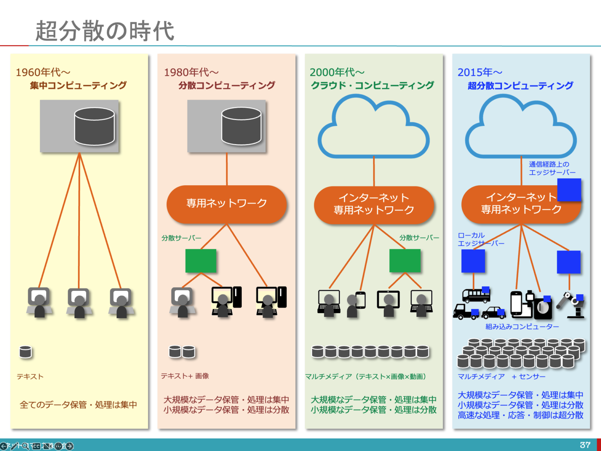
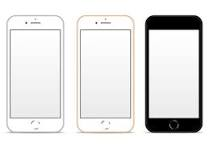

1951年UNIVAC I
ビジネス分野での最初のコンピューターです。広く一般に使われるきっかけになり、
このマシンが出たことでコンピューターのない時代に戻ることはできなくなりました。
1964年 IBM System360
OSが登場しました。ハードウェア、OS、アプリケーションという
3層構造のアーキテクチャーを明確に定義し、いまのコンピューター
・アーキテクチャーの原型となりました。
1989年 インターネット
世界初の商用インターネット接続サービス提供事業者(ISP)
であるPSINetが設立されました。当初は、セキュリティも不十分で、
回線も低速であり、こんなものは、ビジネスには使えないだろうという声
もありましたが課題を解決し、今ではインターネットのなかったころには
戻れなくなりました。
1993年 NCSA Mosaic
広く普及することとなった世界最初のブラウザーです。
これを引き継ぎ、1994年にNetscapeが登場しました。
これによってインターネットを使う体験が、とても
分かりやすく簡単で身近なものになりました。
ただ、この時点では自分でソフトウエアをダウンロード
して、導入する必要がありました。
2000年代初頭 クラウド・コンピューテング

1999年、業務アプリケーションを、ブラウザーで使う
サービスとして提供するというコンセプトのもと、
設立されたSalesforceは翌2000年にサービスを
開始しました。これの登場により、「コンピューター
・システムは、自分たちで所有・構築するものから、
サービスとして使用するものへ」と、考え方が変わりました。
「クラウド前提」の考え方が、やっと定着してきた感もありますが
これまでの「所有・構築」の考え方をそのままに
資源を調達する手段に留まっている企業が多いです。
2007年 iPhone

ITの歴史で欠かすことができないこととしてスマホの礎と
なったiPhoneは外せません。これによりITとインターネット
は、私たちの日常に一体化しました。サービスをモノとを
統合・一体化して、「iPhoneを使う体験」と言う、新たな
商品価値を生みだしました。「ユーザーの体験価値（UX）が、
モノの価値を決める」この価値観を広く浸透させるきっかけ
にもなりました。
2022年 ChatGPT
ChatGPTの基盤となる技術は、2010年頃から、盛んに研究・開発
が加速した機械学習であり、その流れをさらに加速した深層学習
です。このような言語処理の仕組みを一般の人たちが簡便に使える
チャットのアプリケーションに仕立てて、広く解放したことで
専門的な知識やスキルがない多くの人たちが、AIを身近に使う
きっかけを生みだしました。これによりもたらされる大きな変化は、
人間の専門家に代わってのアドバイスや業務の代行をしてくれること
ではないでしょうか。専門家に代わって、なんで知っているLLMが、
相談にのることで仕事の生産性は、著しく向上します。